Chutné a rýchle recepty
Viac ako 2500 jedál s jednoduchou prípravou, ktoré špeciálne vytvorili naši šéfkuchári.
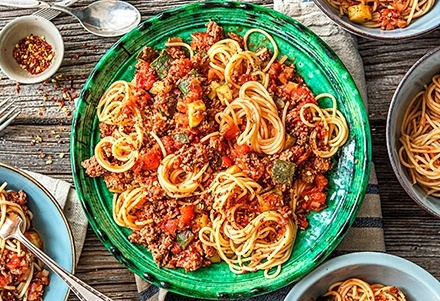
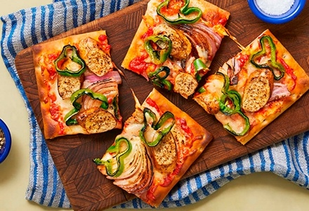
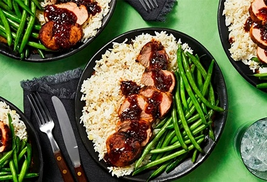
Bravčová panenka
s marhuľovo-balzamikovou glazúrou
na zázvorovej ryži so sezamovými zelenými fazuľkami
710 kcal30 minZobraziť recept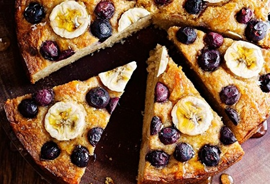
Koláče bez rafinovaného cukru,
ktoré sa vždy vydaria
Objavte naše osvedčené recepty na to najlepšie
pečenie bez cukru!
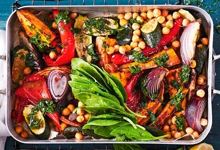
Zdravé pečené sladké zemiaky
a cícer
Tento zdravý vegetariánsky pokrm pečený na plechu je
lahodnou voľbou na večeru.
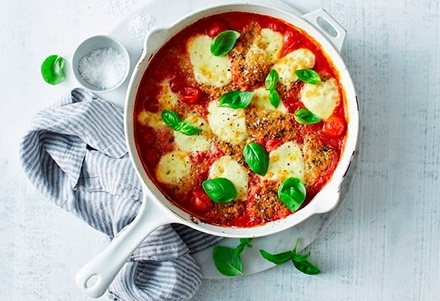
„Kurča“ bez kurčaťa
na spôsob parmigiana
Vegetariánske kuracie parmigiana, ktoré chutí
presne ako originál.
Populárne články
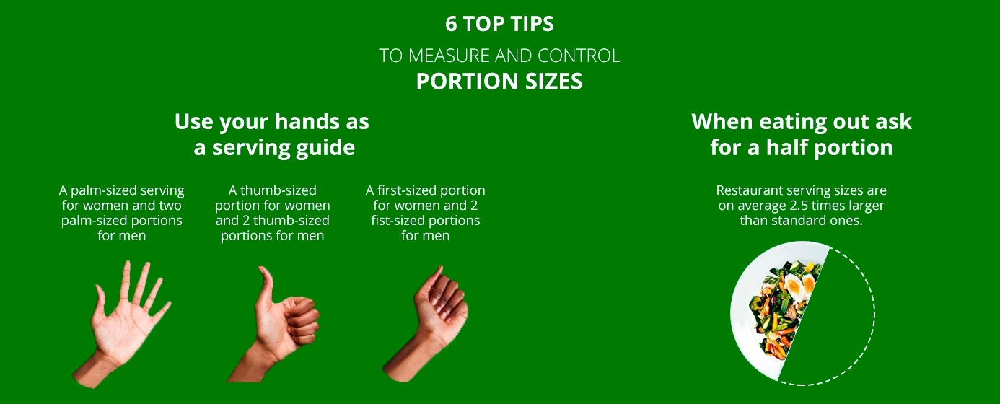
Ako odmerať veľkosť porcií pomocou rúk
Vyvážená strava neznamená len výber správnych druhov potravín, ale aj ich konzumáciu v správnom množstve. Väčšie porcie
môžu viesť k nadmernému príjmu potravy, čo následne môže spôsobiť nárast telesnej hmotnosti. Niekedy však môže byť ťažké určiť, čo predstavuje
zdravú porciu. Táto infografika ponúka všeobecné tipy, ktoré vám pomôžu získať predstavu o veľkosti porcií rôznych druhov potravín.
Majte však na pamäti, že denná energetická potreba človeka závisí aj od jeho veku, telesnej stavby a úrovne fyzickej aktivity.
Preto môžu niektorí ľudia potrebovať väčšie alebo menšie porcie, než aké sú tu odporúčané.
Nové recepty
Objavte niektoré z našich najlepších nových nápadov na recepty! Hoci svoje stálice milujeme, vymýšľanie nových receptov je pre nás skutočnou radosťou.
Do vašich obľúbených zbierok neustále pridávame nové inšpirácie – či už ide o nápady na raňajky a brunch, jednoduché večere, chutné dezerty a mnoho ďalšieho.
Pustite sa do varenia a dobrú chuť! S láskou pre vás a vaše rodiny.
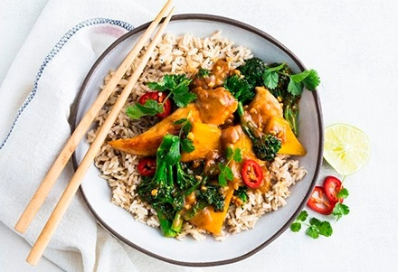
Zdravšie kuracie satay
pripravované na panvici
Použitie kokosového mlieka znamená, že toto kura
Satay jedlo pripravované metódou stir-fry je stále krémové, no jednoducho dokonalé!
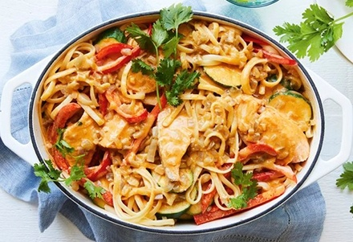
Losos v červenom kari
linguine
Toto krémové jedlo spája lahodné
chute Thajska!
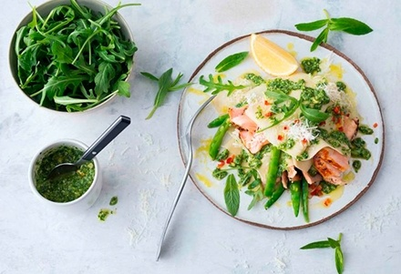
Rýchle cestoviny s lososom a
mätovo-citrónovým pestom
Premeňte tradičné lasagne s týmto
recept, v ktorom sa používa grilovaný losos!
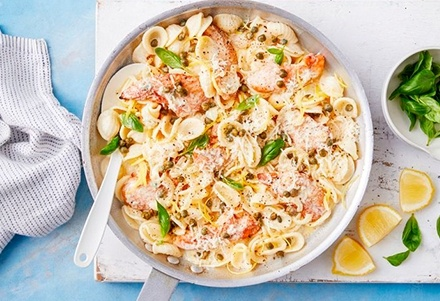
Krémové kuracie piccata
cestoviny
Táto krémová kuracia piccata so syrom a cestovinami
spĺňa všetky požiadavky – a je hotová raz-dva!
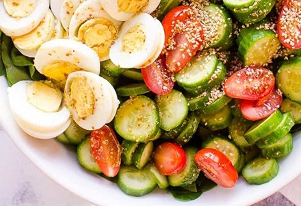
Zdravý špenátový
šalát
Máme ten najlepší zdravý špenátový šalát.
recept pre vás!
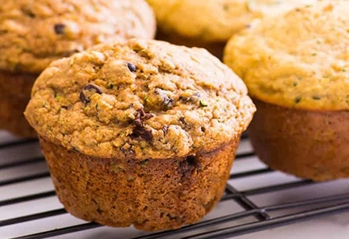
Zdravé cuketové
muffiny
Tieto muffiny s jablkovým pyré – vláčne, nadýchané a plné vlákniny –
máme v našom pravidelnom jedálničku.
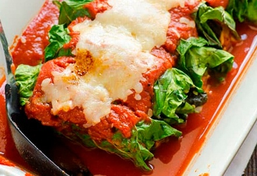
Kurča s nízkym obsahom sacharidov
Enchilady
Znie to úplne fantasticky. Je to niečo ako
plnené kapustné listy po mexicky!
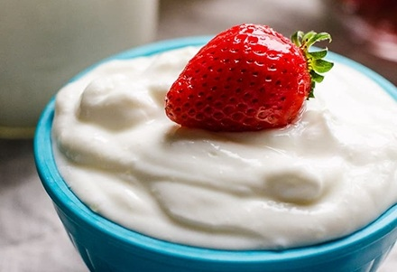
Jogurt z Instant Potu
Domáci jogurt z hrnca Instant Pot chutí
presne tak ako ten z obchodu.